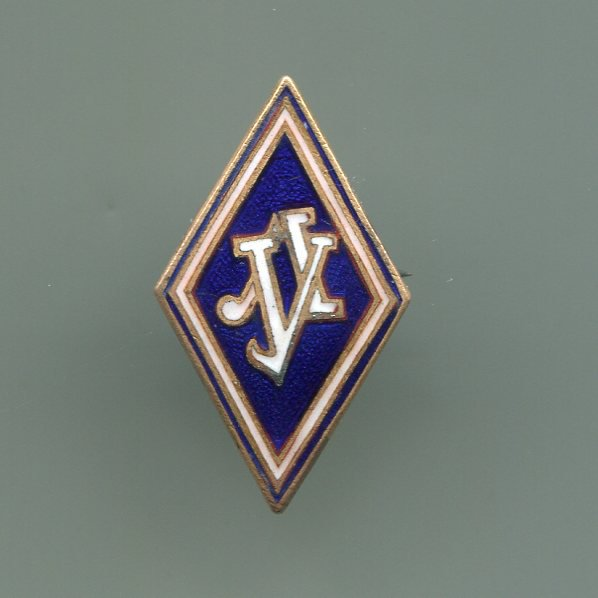

Юсупов Рафаэль Мидхатович

Юсупов Рафаэль Мидхатович

Карьера
Ученый, генерал
Дата рождения
17 июля, 1934
Место рождения
Казань, СССР
Учёная степень
Доктор технических наук
Биография
Юсупов Рафаэль Мидхатович родился 17 июля 1934 года в г.Казани. Его детство было нелегким, он рано остался без отца. Отец Р.М.Юсупова, Мидхат Мустафеевич, в июне 1942 года погиб в Великой Отечественной войне под Москвой. Его мать осталась одна с двумя детьми – восьмилетним сыном Рафаэлем и трехлетней дочерью Эльмирой.
После окончания в 1952 году с золотой медалью Казанской спецшколы ВВС Р.М.Юсупов был направлен в Ленинградскую военно-воздушную инженерную академию (ныне Военно-космическая академия (ВКА) имени А.Ф.Можайского), которую окончил с отличием в 1958 году по специальности инженер-электрик. После окончания в 1952 году с золотой медалью Казанской спецшколы ВВС Р.М.Юсупов был направлен в Ленинградскую военно-воздушную инженерную академию (ныне Военно-космическая академия (ВКА) имени А.Ф.Можайского), которую окончил с отличием в 1958 году по специальности инженер-электрик. В 1964 году он окончил математико-механический факультет Ленинградского государственного университета по специальности математик.
В 1958-1985 годах Р.М.Юсупов проходил службу в Военной академии имени А.Ф.Можайского (ВА имени А.Ф.Можайского), где занимал должности инженера (1958—1959), старшего инженера (1959), научного сотрудника (1959—1960), адъюнкта (1960—1962), старшего научного сотрудника (1962—1967), начальника научно-исследовательской лаборатории систем управления летательных аппаратов (1967—1970), заместителя начальника кафедры автономных систем управления ракет и космических аппаратов (1970—1971), начальника кафедры военной кибернетики и боевой эффективности применения ракетно-космической техники (1971—1976), начальника созданного с его участием, уникального в системе высшего военного образования, факультета сбора и обработки информации (1976-1985). В 1958-1985 годах Р.М.Юсупов проходил службу в Военной академии имени А.Ф.Можайского (ВА имени А.Ф.Можайского), где занимал должности инженера (1958—1959), старшего инженера (1959), научного сотрудника (1959—1960), адъюнкта (1960—1962), старшего научного сотрудника (1962—1967), начальника научно-исследовательской лаборатории систем управления летательных аппаратов (1967—1970), заместителя начальника кафедры автономных систем управления ракет и космических аппаратов (1970—1971), начальника кафедры военной кибернетики и боевой эффективности применения ракетно-космической техники (1971—1976), начальника созданного с его участием, уникального в системе высшего военного образования, факультета сбора и обработки информации (1976-1985). В 1985 году Р.М.Юсупов назначается на должность начальника Направления моделирования стратегических операций Центра оперативно-стратегических исследований Генерального Штаба ВС СССР, которую исполнял по 1986 год. В этом же году он был переведен на должность начальника кафедры оперативно-тактической подготовки ВА имени А.Ф. Можайского.
Достижения и награды
За заслуги в период военной службы Р.М.Юсупов награжден орденом «Красной звезды» (1978) и тринадцатью медалями, ему присвоено воинское звание генерал-майор (1980). За заслуги в период военной службы Р.М.Юсупов награжден орденом «Красной звезды» (1978) и тринадцатью медалями, ему присвоено воинское звание генерал-майор (1980). За научные достижения и педагогические заслуги он награжден орденом «Почета» (1999) и орденом «За заслуги перед отечеством» IV степени (2005), знаком отличия «За заслуги перед Санкт-Петербургом» (2009). Ему присвоено почетное звание «Заслуженный деятель науки и техники РФ» (1984), «Почетный радист СССР» (1974), ученое звание профессора (1974) и присуждена ученая степень доктора технических наук (1968). Он является лауреатом Первой премии Министерства высшего и среднего специального образования СССР за лучшую научную работу (1983), лауреатом премии Правительства Санкт-Петербурга имени А.С.Попова в области электро- и радиотехники, электроники и информационных технологий (2009), лауреатом премии Правительства Санкт-Петербурга за выдающиеся достижения в области высшего и среднего профессионального образования (2009).
Р.М. ЮСУПОВ – генерал, ученый, общественный деятель Р.М.Юсупов является членом-корреспондентом Российской академии наук по Отделению нанотехнологий и информационных технологий, избран почетным академиком Академии наук республики Татарстан, является почетным профессором Академии космических войск им.А.Ф.Можайского. Р.М.Юсупов – выдающийся ученый в области информатики и теории управления, основатель и руководитель научных школ по теории чувствительности информационно-управляющих систем и научно-методологическим основам информатизации общества. За достижения в области педагогики и просветительства Р.М. Юсупов награжден Международной премией имени Николая Рериха. Р.М.Юсупов является автором более 350 научных трудов, в том числе 20 монографий и 17 изобретений. Им подготовлено 13 докторов наук и 45 кандидатов наук, среди его учеников руководители научных организаций и фирм.
Научные труды
Теория чувствительности
В 1958–1976 годах Р.М.Юсупов проводил исследования в области теории управления полетом летательных аппаратов, теории самонастраивающихся (адаптивных) систем, теории идентификации и теории чувствительности динамических систем. Он является одним из основоположников отечественной научной школы по теории чувствительности.
Автоматическое управление
Благодаря работам P.M. Юсупова, его коллег и учеников теория чувствительности вошла в число основных разделов общего курса теории автоматического управления. Анализ чувствительности стал обязательным этапом создания систем управления и их элементов. Научные результаты P.M. Юсупова в указанных областях используются при проектировании, настройке и испытаниях высокоточных приборов и систем.
Самонастраивающиеся системы
Кандидатская диссертация Р.М.Юсупова (1963 г.) была посвящена разработке и исследованию самонастраивающейся системы с эталонной моделью в системе управления самолетом с бортовой вычислительной машиной. Его докторская диссертация (1968 г.) связана с развитием и применением теории чувствительности для анализа и синтеза систем управления ракет и космических аппаратов в условиях параметрической неопределенности.
Кибернетика и научное моделирование
С 1976 года научные интересы P.M. Юсупова связаны с проблемами сбора и обработки информации, геофизической кибернетики (теория управления геофизическими процессами), математического моделирования, информатизации, телемедицины, информационной безопасности.